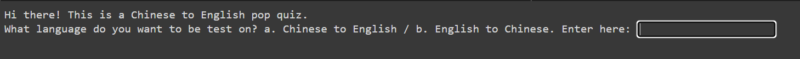
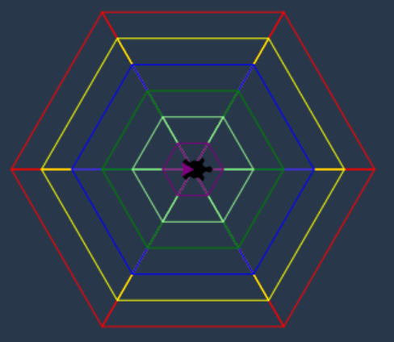
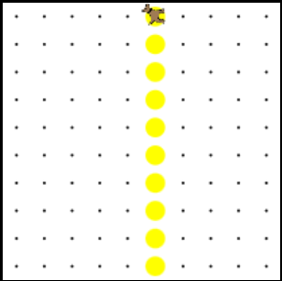

More about me?
Hi there, since you are on this page, I asume that you are interested in knowing more about me.
Who am I?
My name is Joanna Wang. I was born in China, and got here during elementry school. Ever since I first started knowing technology, which has been through all of my life, I've always had thoes questions, like "How is a video game created?" "How do people make these websites and apps so helpful?" or "How do our phone screens know my fingers are clicking the button?" I know this last one is stupid, but this is something that will randomly pop into my brain. I can't stop thinking about it.
How does Catapult helped me?
Catapult is a great place for me to start my tech/CS career. Before then, I knew nothing about the tech field, except coding. The Catapult program is a creative opportunity for learning more about the different fields of technology and engineering.
What did I do?
I took AP computer science Principle in school, and I did a few coding projects during class time, like a quiz game, or a program to draw a specific shape.
Examples:

This is a program that offers user a quiz about either Chinese to English or English to Chinese; then ask for the number of questions the user wants; last, after the user finished the test, it will display the percentage that the user gets.

Simple pattern of drawing a shape.

Simple loop
Outside of school life?
Outside of school, I like to read fiction book, and I'm actually writing some of my own fiction book since middle school, just for fun:)
I also like to spend my time just with myself in my room, thinking about my life, my book, or random things that just come up to me.